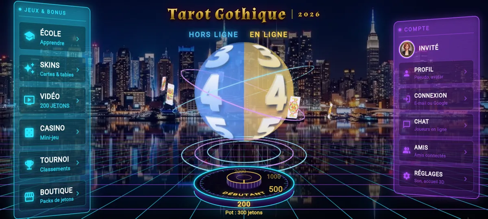

Arriva il Natale: e se si regalasse tempo insieme?
Ogni dicembre torna la stessa domanda. Che regalo fare a chi possiede già l’essenziale e dice di non aver bisogno di nulla? Gli oggetti si accumulano, i cioccolatini spariscono, i buoni si dimenticano in un cassetto. I ricordi restano.
I tarocchi sono tra i regali che si vivono. Escono dopo il pranzo, si spiegano le regole alla più giovane, si accusa il cugino di aver tenuto troppo il Petit. L’offerta speciale Natale gioco di tarocchi di Tarot Gothique 2026 parte da qui: un gioco per riunirsi, anche quando la famiglia vive ai quattro angoli del paese.
Un regalo per chi, esattamente?
Prima del prezzo, parliamo delle persone. Un buon regalo risponde a un desiderio preciso, e non tutti a tavola hanno lo stesso.
La nonna che sa i tarocchi a memoria
Conosce i tarocchi da sessant’anni e non si farà impressionare da scenari cupi. La commuoverà ritrovare le compagne di tarocchi del giovedì senza uscire sotto la pioggia. Installa il gioco con lei, crea il suo account, aggiungi le amiche. La sera di Natale ti batterà ai tarocchi.
L’adolescente che vive su mobile
Non aprirà un regolamento, ma proverà volentieri dieci minuti commentati. Poiché il gioco mobile è gratuito, comincia da lì: scopre, si diverte, e saprai se l’offerta per PC gli conviene.
La coppia che ha appena comprato un PC
Un PC nuovo cerca sempre i primi usi. Due principianti possono imparare i tarocchi fianco a fianco e poi raggiungere lo stesso tavolo. Di che riempire le lunghe sere di gennaio.
Il regalo tra colleghi a dieci euro
I regali sorteggiati in ufficio hanno spesso un tetto di dieci euro. Con 7,92 € si resta sotto, si evita il banale e si consegna una bella busta invece di un pacco ingombrante.

L’offerta di fine anno in cifre
Il prezzo ordinario del gioco per PC Windows è 9,90 €, pagati una volta. La tariffa speciale di Natale lo porta a 7,92 €. Crescono anche i regali: la riserva arriva a 200.000 gettoni, gli addobbi diventano quattro dorsi e due tappeti, e l’ingresso alle gare del fine settimana è assicurato per dodici mesi.
La parola d’ordine è di due parole, spiegata nelle istruzioni del codice. L’offerta termina il 31 dicembre 2026, prima di mezzanotte, ora di Parigi.
Speciale, ma non straordinaria: siamo onesti
Due vantaggi del gioco esistono tutto l’anno e non devono nulla al Natale: niente pubblicità su Windows e aggiornamenti senza limiti di durata. Li ricordiamo perché tu possa giudicare, non per allungare la lista.
Gioco PC a pagamento, gioco mobile gratuito: la differenza
Il gioco PC si installa, sfrutta lo schermo grande e non ha pubblicità. Il gioco mobile si apre nel browser senza pagare, con annunci dopo le mani. Entrambi condividono un profilo: amici, gettoni e progressi passano dal PC al mobile.
Ordinare il regalo senza stonature
Un ordine di Natale va in fretta, a volte troppo. Ecco la sequenza che evita rimpianti.
Una settimana prima di Natale: chiedere l’e-mail
Tutto dipende da questo. I bonus raggiungono il profilo il cui indirizzo confermato coincide con quello dell’acquisto. Fai la domanda per caso, o passa da un complice. Chi non ha ancora un profilo lo aprirà più tardi con lo stesso indirizzo: troverà il regalo.
Il giorno stabilito: scegliere l’ora del gioco
Il messaggio con il link parte appena il pagamento è convalidato. Paga all’ultimo momento se tieni alla sorpresa del regalo, per esempio mentre si sparecchia. Il link resta attivo sette giorni e permette cinque download; se dimenticato, si richiede di nuovo dal sito.
Dopo l’offerta: conservare la ricevuta
Un documento PDF accompagna l’e-mail. Arriva al destinatario, importo compreso. Se ti disturba, avvisalo, oppure ordina al tuo indirizzo e usa il tuo account per le serate insieme.
Che cosa serve a un PC per i tarocchi
Windows 10 o 11 a 64 bit, processore a due core, almeno quattro gigabyte di memoria. Un PC d’ufficio recente va bene. Nel dubbio, apri prima il gioco gratuito su PC o mobile: è la prova migliore.
La prima serata di tarocchi, passo dopo passo
Il regalo è aperto, tutti guardano lo schermo. È adesso che la magia opera, o no. Qualche consiglio per riuscire.

Cominciare dal gioco spiegato
Su PC o mobile, avvia la lezione di tarocchi sul valore delle carte. In due minuti i novizi ricordano che tre carte dei tarocchi contano più delle altre: il Petit, il 21 e l’Excuse. Prosegui con una mano guidata in attacco, dove la carta consigliata lampeggia. La Scuola non chiede posta né classifica.

In squadra davanti a un solo PC
Collega il PC al televisore e decidete insieme. Prendere? Chi chiamare? I dibattiti valgono la mano. I bambini imparano sentendo i grandi contraddirsi.
Continuare su mobile nel treno di ritorno
Gli ospiti partono, resta la rivincita. Un tavolo privato su mobile riunisce gli stessi avversari, ciascuno dal proprio posto. Così il regalo diventa abitudine.
Tenere viva la fiamma dopo Natale
Fissate un appuntamento di tarocchi, la domenica pomeriggio per esempio. Segnate i punteggi memorabili, inventate un pegno per l’ultimo. C’è anche un torneo settimanale di tarocchi nel gioco per chi ama misurarsi con sconosciuti.
Gioco di tarocchi, regalo di squadra: idee di scena
Un file non si scarta. Nulla vieta di farne un vero regalo di Natale, con un po’ di cartone e molta malizia.
La busta con le carte dei tarocchi
Metti in una busta tre carte di un vecchio mazzo di tarocchi: il Petit, il 21, l’Excuse. Sul retro di ognuna, una parola. Insieme danno il nome del gioco e l’ora della prima mano.
Un calendario di Natale su mobile
Dal 20 al 24 dicembre manda ogni sera un indizio sul mobile della persona: una regola dei tarocchi, un indovinello, una foto. L’ultimo messaggio annuncia il regalo, gustato così cinque volte.
La sfida di tarocchi tra generazioni
Due squadre davanti al computer, anziani contro giovani. Tre distribuzioni, un premio simbolico, la rivincita su mobile in settimana.
Che cosa sapere prima di comprare un gioco digitale
Un download non segue le regole di un maglione troppo grande. Chiedendo l’accesso immediato, l’acquirente accetta di perdere il diritto di recesso appena il download comincia. Finché il link non è usato, conserva quattordici giorni. Le condizioni di vendita (in francese) lo precisano, come il ricorso al mediatore.
I limiti dell’offerta, senza righe minuscole
Gli addobbi si scelgono tra quelli che il profilo non possiede; un collezionista ben fornito ne riceverà meno. La scelta di quattro dorsi e due tappeti richiede l’ultima versione del gioco. L’offerta esclude il negozio del gioco e gli store di applicazioni.
Speciale principianti: tre domande frequenti
Si può imparare da soli? Sì, gli avversari del computer non perdono mai la pazienza.
Le carte sono tradizionali? Sì, quelle francesi da gioco; nulla a che vedere con una lettura divinatoria, che appare solo come ricompensa dopo una vittoria.
Quanto dura una mano? Una decina di minuti, così ci si ferma quando arriva il dolce.
Un regalo che non obbliga
Nessun rinnovo automatico, nessun mezzo di pagamento salvato. Chi riceve il regalo gioca molto, poco o aspetta l’estate. Il gioco non sparirà.
Offerta, gioco, tarocchi: l’ultima parola
Regalare carte dei tarocchi è dire a qualcuno che si vorrebbe passare tempo con lui. Il supporto conta meno dell’invito. Se questo ti piace, l’offerta speciale di Natale vale fino al 31 dicembre, e un anno intero servirà per la rivincita.
Guida scritta dal creatore del gioco, con l’aiuto dell’intelligenza artificiale per testo e scenari. Le schermate sono in francese.